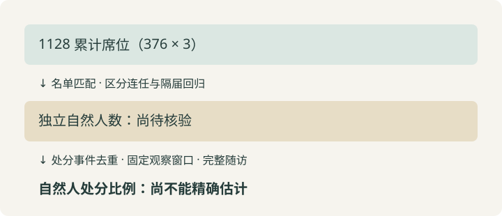

1. 研究对象与口径
研究窗口为2012年至2026年11月25日。分母376包含中央委员和候补中央委员，不是正式中央委员人数。以各届全会公报末尾确认的撤销党内职务、留党察看、开除党籍作为可复现的事件口径；不计普通免职、辞职、死亡、仅立案未处分。该定义比所有政务撤职及以上处分更窄，不能保证捕获全部个案。
本研究尚未逐人匹配三届当选名单。下文的百分比是公报确认人数除以初始委员会规模的描述性指标，不是严格的自然人发生率。二十届尚未结束，观察窗口也不相等。[S15] [S16]
2. 逐届复核
原始待检验计数为35、4、51。十九届四中全会确认刘士余留党察看二年，中央纪委处分通报还确认政务撤职；因此按本口径应从4修正为5。[S5] [S6] [S7]
| 全会 | 日期 | 人数 | 来源 |
|---|---|---|---|
| 十八届四中 | 2014-10-23 | 6 | [S1] |
| 十八届五中 | 2015-10-29 | 10 | [S2] |
| 十八届六中 | 2016-10-27 | 4 | [S3] |
| 十八届七中 | 2017-10-14 | 15 | [S4] |
| 十九届四中 | 2019-10-31 | 1 | [S5] |
| 十九届七中 | 2022-10-12 | 4 | [S7] |
| 二十届三中 | 2024-07-18 | 3 | [S8] |
| 二十届四中 | 2025-10-23 | 14 | [S9] |
| 二十届五中 | 2026-10-29 | 34 | [S10] |
三届合计91次公报名单计数，91 ÷ 1128 = 8.07%。二十届51 ÷ 376 = 13.56%，十九届5 ÷ 376 = 1.33%，计数之比10.2。十八届35 ÷ 376 = 9.31%。这只是已公布确认事件的比较。
3. 换届与分母：8.07%不是自然人风险
十九大和二十大诞生记分别报告候选人中新提名244人（64.9%）和246人（65.4%），继续提名132人与130人。这不是逐人核对后的当选名单交集。[S13] [S14]
若暂以该提名数据代理当选重叠，且没有隔届回归，则独立人数约为376+244+246=866；若处分对象互不重复，91/866约10.51%。这是双重假设下的演算，而非已经核实的自然人比例。不宜用它作结论。

4. 立案、违纪与处分为何不同
十八届中央纪委工作报告记录任期内立案审查43名中央委员及候补委员；2022年记者会报道给出十八届49、十九届12的立案调查数。口径与观察截止日不同，不应与全会确认人数直接相加。[S11] [S12]
违纪行为、线索发现、立案、处分决定、全会确认可能发生在不同年份。十九届的某些行为可能于二十届被发现，但没有逐案时间资料就不能归因。处分也不全部等于经济腐败。
即便在理想化的固定队列模型中，观察率 = 实际符合条件的违纪率 × 被发现且确认处分的概率；后者未知，还存在跨届滞后和右删失。因此无法由13.56%推算真实腐败率。
5. 二十届军队系统是重要的构成变量
按公报列出的审查报告机关，二十届三次全会分别为军委3、9、16人，中央纪委0、5、18人，合计军委28人（54.9%）、中央纪委23人（45.1%）。[S8] [S9] [S10]
这表明军委审查报告在处分计数中占比较高，但缺少各系统当选成员的基线人数、身份和在险时间，不能据此推导军队相对地方的违纪风险，也不能把报告机关等同于人员全部职业轨迹。
6. 竞争解释与反证
| 候选解释 | 需要怎样检验 |
|---|---|
| 集中清理与换届筛选 | 按任前任后违纪时间、履历和队列比较；两次新提名比例相近却有不同处分数量，单靠筛选不足。 |
| 查处力度与发现能力变化 | 比较线索、巡视、立案、处分、公开范围以及滞后分布。 |
| 军队系统集中整肃 | 计算不同部门的在险人年，分开职业背景与审查机关。 |
| 政治纪律与组织治理变化 | 比较正式处分理由、制度规则和人员调整；不可推定个案的未公开动机。 |
| 任期与统计口径差异 | 固定观察窗口，按首次立案、正式处分和全会确认三条时间序列复算。 |
查处增加既可能体现更强的监督发现能力，也可能反映积累的问题；查处下降也可能受发现、公开与时间窗口影响。二者均不能单独证明反腐治理成功或失败。
7. 研究结论与下一步
可支持的判断：公报确认的处分计数呈35、5、51，二十届未结束即高于十八届该口径全期。应进一步检验任前考察、权力监督和事前预防机制，而不是只看处分总数。
仍未知：真实违纪率、个案完整性、三届独立人员精确规模、离任后追责和部门相对风险。
建议建立逐人数据表：person_id、届次、当选身份、递补记录、职业系统、违纪时间区间、立案时间、党纪/政务处分日期、全会确认日期、来源URL。通过名单连接、同名消歧、固定随访与跨届去重后，才讨论队列发生率。
关联研究：干部任用与公开人事数据。
8. 一手资料与核验记录
取得日期：2026-11-25。转载同一新华社公报不是独立交叉验证。S12为媒体转述，待补官方记者会全文；S16为索引检索日期。
- S1 十八届四中全会公报（2014-10-23）：确认处分段：6人。
- S2 十八届五中全会公报（2015-10-29）：确认处分段：10人。
- S3 十八届六中全会公报（2016-10-27）：确认处分段：4人。
- S4 十八届七中全会公报（2017-10-14）：确认处分段：15人。
- S5 十九届四中全会公报（2019-10-31）：刘士余留党察看二年。
- S6 中央纪委国家监委：刘士余处分决定（2019-10-05）：另有政务撤职。
- S7 十九届七中全会公报（2022-10-12）：确认处分段：4人。
- S8 二十届三中全会公报（2024-07-18）：确认处分段：军委3人。
- S9 二十届四中全会公报（2025-10-23）：确认处分段：纪委5、军委9。
- S10 二十届五中全会公报（2026-10-29）：确认处分段：纪委18、军委16。
- S11 十八届中央纪委工作报告（2017-10-31）：立案审查中央委员和候补委员43人。
- S12 二十大新闻中心记者会：肖培答问（媒体报道）（2022-10-17）：十八届49、十九届12；待补官方全文。
- S13 十九届中央委员会诞生记（2017-10-24）：候选人中新提名244、继续提名132。
- S14 二十届中央委员会诞生记（2022-10-23）：候选人中新提名246、继续提名130。
- S15 二十大闭幕报道（2022-10-22）：当选205名委员和171名候补委员。
- S16 中央委员会历届全会资料索引（2026-11-25）：十九届当选204名委员、172名候补委员；检索日期。